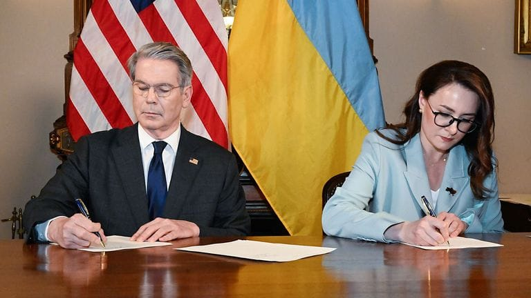

世界苦茶05月01日新闻 | 43条 | 苗华被正式调查批捕

苗华被正式调查批捕 | 美国与乌克兰签署矿业协议美国大后退 | 中国4月官方PMI下跌1.5 | 民营经济促进法三读通过 | 中国解除欧洲议会议员制裁
透明茶室
苦茶数据
美元兑人民币：7.28（昨日7.26，前日7.27）
美元兑日元：144.09（昨日142.50，前日142.83）
上证指数：休市（昨日3279，前日3283）
标普500指数：5569（昨日5528，前日5525）
比特币：95146（昨日95024，前日94556）
布伦特原油：61.09（昨日65.45，前日63.35）
中国新闻
• 香港男子涉煽动被捕 ：香港警方国家安全处拘捕了一名22岁的男子，他涉嫌在社交平台发布煽动性的口号和歌曲。综合《明报》和《星岛日报》报道，国安处星期一在九龙区采取执法行动，拘捕该男子。他涉嫌违反《维护国家安全条例》第24条“明知而发布具煽动意图的刊物”罪。据了解，该男子在连锁快餐店打工，他从去年起，以化名在社交平台X及Instagram发布“光复香港 时代革命”“共产党下台”等口号，还发布《愿荣光归香港》歌曲及数十篇带有煽动意图的贴文。
• 香港拟修法限制工会任职 ：香港拟修订工会条例，要求被裁定触犯危害国家安全罪行的人，终身不得担任工会职务或组织工会。综合香港01和《星岛日报》等报道，香港立法会星期三首读《2025年职工会（修订）条例草案》，要求被裁定触犯危害国家安全的罪行的人，自被定罪当日起不得担任工会职员或签署任何有关工会的登记申请书等。香港劳工及福利局局长孙玉菡说，此次修订旨在加强国家安全保障并完善职工会规管制度，草案已咨询劳顾会、立法会及主要劳工团体，获得广泛支持。
• 苗华等被罢免人大代表 ：被停职的中共中央军委委员、军委政治工作部主任苗华，被罢免全国人大代表职务。中国全国人大常委会会议星期三闭幕后发布公告。公告说，中央军委政治工作部军人代表大会决定罢免苗华的第十四届全国人民代表大会代表职务。此外，湖北省人大常委会决定，罢免湖北省委原书记蒋超良的第十四届全国人民代表大会代表职务，贵州省人大常委会决定罢免贵州茅台集团原董事长丁雄军的第十四届全国人民代表大会代表职务，吉林省人大常委会决定接受吉林省政府原秘书长刘化文辞去第十四届全国人民代表大会代表职务。 （翻评：苗华轻轻放下的可能性消失，下一个看何卫东了。）
• 中国拟解禁欧洲议员制裁 ：中国据报将解除对五名欧洲议会议员制裁，中国外交部并未正面回应此事，仅称希望中欧立法机构相向而行。政治新闻网站Politico星期三引述一名欧洲议会高级官员透露，议长梅索拉将在当天举行的一场闭门会议上向各政团领导人通报，中国将解除对五名现任及前任欧洲议会议员的制裁。梅索拉办公室的发言人上周已确认，欧洲议会与中方就解除制裁的谈判已进入最后阶段。
• 欧盟法院叫停马耳他金护照 ：欧洲法院裁定，马耳他需要终止黄金护照项目。中国富人的移民渠道料将减少一条。综合路透社和法新社报道，欧洲法院星期二表示，欧盟成员国可以决定如何授予或撤销国籍，但马耳他的计划削弱了成员国之间相互信任的原则。欧洲法院称：“成员国不能以预定的支付或投资换取其国籍——实际上是欧洲公民身份，这基本上相当于将国籍的获取变成一项纯粹的商业交易。”
• 李乐成出任工信部部长 ：中国全国人大常委会会议星期三表决通过，李乐成出任中国工信部部长。据新华社报道，中国十四届全国人大常委会第十五次会议决定免去金壮龙的工业和信息化部部长职务，任命李乐成为工业和信息化部部长。公开资料显示，现年60岁的李乐成是湖北监利人，早年在湖北工作多年，曾任荆门市机械冶金工业总公司总经理，湖北东光集团有限公司总经理、董事长等。
• 习近平部署“十五五”规划 ：中国国家主席习近平谈及“十五五”时期（2026年至2030年）经济社会发展规划时说，要前瞻性把握国际形势发展变化对中国的影响，因势利导对经济布局进行调整优化。据新华社报道，习近平星期三在上海主持召开部分省区市“十五五”时期经济社会发展座谈会时说，今年是“十四五”规划收官之年，要在加紧落实规划目标任务的同时，适应形势变化，把握战略重点，科学谋划好“十五五”时期经济社会发展。他说，谋划“十五五”时期经济社会发展，要前瞻性把握国际形势发展变化对中国的影响，因势利导对经济布局进行调整优化。要坚定不移办好自己的事，坚定不移扩大高水平对外开放，多措并举稳就业、稳企业、稳市场、稳预期，有效稳住经济基本盘，加快构建新发展格局，全面推动高质量发展。
• 中方白皮书指疫情起源早于美报导 ：中国官方发布有关冠病疫情的白皮书称，大量证据提示美国疫情发生的时间早于其官方公布时间，也早于中国疫情暴发时间，应该对美国开展病毒溯源调查。据新华社报道，中国国务院新闻办公室星期三发布《关于新冠疫情防控与病毒溯源的中方行动和立场》白皮书。白皮书说，《世卫组织召集的SARS-CoV-2全球溯源研究：中国部分——世卫组织－中国联合研究报告》等研究通过系统开展流行病学、分子溯源、动物宿主排查与冷链输入研究，排除了武汉作为冠病病毒自然起源地的可能性，认为“武汉实验室泄漏病毒”途径极不可能，并为全球科学界提供了关键的实证数据与研究范式。
• 中国旅游支出或创新高 ：研究机构预测，中国民众今年在国内旅游上的支出将创下9680亿美元的新高，成为当前消费疲软背景下的一大亮点。据彭博社报道，世界旅游业理事会预计，2025年中国国内旅游支出将比去年增长近19%；与此同时，海外旅游支出也有望超越冠病疫情前的水平。2024年，中国民众出境游消费总额为1.8万亿元人民币，较预期低出11%。
• 李铁二审维持20年刑期 ：中国国家男子足球队前主帅李铁二审维持原判，被判处有期徒刑20年。据央视新闻报道，湖北省高级人民法院星期三对李铁受贿、行贿、单位行贿、非国家工作人员受贿、对非国家工作人员行贿案二审公开宣判，裁定驳回上诉，维持原判。今年48岁的李铁出生于辽宁省沈阳市，前中国国家男子足球队员。退役后，他曾在广州恒大、河北华夏幸福、武汉卓尔等俱乐部执教及担任管理层。2020年1月至2021年12月，李铁担任中国国家男子足球队主教练，因世预赛亚洲区12强赛成绩不佳而辞职。2022年11月，李铁官宣被查。 （翻评：李铁判的也太重了。）
亚太印太新闻
• 越南阅兵庆南北统一 ：越南4月30日在胡志明市举行庆典、阅兵和游行活动，隆重纪念越战结束和南北越统一50周年。庆典活动于当地时间星期三6时30分正式开始，直升机和战斗机飞行队在胡志明市中心上空的飞行表演拉开阅兵式序幕。阅兵方阵和游行队伍通过主席台接受检阅。数以千计的兴奋的市民——许多人穿着印有越南国旗的T恤——于星期二晚上便聚集在胡志明市的街道上，准备观看早上的仪式。约1万3000人，包括退伍军人、士兵和普通民众，沿着胡志明市通往独立宫的主要通道黎笋街游行。
• 印度酒店火灾致15死 ：印度加尔各答市一家酒店发生火灾，造成至少15人死亡，另约有12人烧伤。法新社报道，位于加尔各答市的里图拉杰酒店星期二晚上发生大火，当时一些人则从窗户爬到屋顶逃生。加尔各答警察局局长维尔马星期三说，一些人从这家酒店房间和屋顶获救。
• 朱立伦促赖清德对话 ：台湾在野的国民党主席朱立伦呼吁总统赖清德召开国是会议，与朝野政党共同讨论台湾的内外部挑战，而非只是为了让民进党能持续执政而斗争。综合台湾《自由时报》《联合报》报道，朱立伦星期三在国民党中常会上发表讲话时说，4月26日多达25万人在台北凯达格兰大道集结“战独裁”，但集会结束后，检调持续针对在野党发动搜索、羁押，赖清德更下达军令状要绿营党公职人员让35名蓝营立委罢免案通过二阶连署，显示赖清德没有改变。朱立伦批评赖清德忘了自己是“中华民国总统”，忘了民众赋予他的权力是团结台湾，安定社会，解决问题，而非每天搞斗争。
• 韩总理拟参选总统 ：消息称，韩国代理总统、国务总理韩悳洙将于本周辞职后，宣布角逐第21届总统。韩联社引述韩国政府和执政党阵营消息称，韩悳洙正考虑于星期四上午完成既定工作后，在当天下午辞职，并于隔天宣布参选。韩悳洙阵营已在首尔汝矣岛租下办公室，着手筹组竞选团队。
• 莫迪授权军方回应枪击案 ：印度媒体称，印度总理莫迪授权军方决定如何回应克什米尔枪击事件。印度《经济时报》星期二引述未具名知情人士的话报道，莫迪与国防部长拉吉纳特星、国家安全顾问多瓦尔和国防参谋长乔汉开会时，授权武装部队自行决定对克什米尔袭击事件做出回应的时间、目标和方式。彭博社向莫迪办公室询问详情，尚未获得回应。
• 金正恩令推进海军核化 ：朝鲜领导人金正恩下令加快为海军舰艇配备核武器。朝中社星期三报道，金正恩日前带着女儿金珠爱，观摩5000吨级新型多功能攻击型驱逐舰“崔贤”号首次试射，并指示有关部门加速推进“海军核武装化”。报道称，朝鲜导弹总局、国防科学院、探测电子战总局28日至29日在“崔贤”号驱逐舰上进行多项武器试验，金正恩现场观摩。
科技新闻
• 小米开源首个大模型 ：中国科技巨头小米公司推出首个自研开源人工智能大模型，加入科技企业竞逐AI赛道的行列。小米星期三在微信公众号宣布，公司当天开源首个为推理而生的大模型“Xiaomi MiMo”。小米说，MiMo是一款具备类人推理能力的大模型，类似于中国初创公司深度求索此前发布的DeepSeek-R1。
• 台积电美厂动工 ：全球晶片代工巨头台积电在美国亚利桑那州的第三座晶圆厂动工，加速在美国的扩张。综合美国商务部网站和彭博社报道，美国商务部长卢特尼克当地时间星期二造访了台积电在亚利桑那州凤凰城的设施，台积电当天在此为第三座晶圆厂举行奠基仪式。卢特尼克说：“我们在台积电亚利桑那州工厂庆祝美国制造业的回归。在特朗普总统富有魄力的领导和明确的指引下，公司和工作岗位正以创纪录的速度回到美国。”
• 黄仁勋呼吁放宽AI出口管制 ：英伟达CEO黄仁勋周三表示，他希望特朗普政府改变美国向其他国家出口人工智能技术的规定，以便美国企业能够更好地利用未来的机遇。黄仁勋表示：“我们需要加速美国AI技术在全球的扩散。政府的政策和鼓励措施确实需要支持这一点。”拜登政府已经制定了一项关于AI扩散的额外政策，即根据三个资格等级限制向世界各国销售AI技术。黄仁勋说：“我不确定新的扩散规则会是什么，但无论最终如何制定，都必须认识到自上一版扩散规则出台以来，世界已经发生了根本性变化。”他还警告称，中国正在成长为技术领域的强大竞争对手，并特别提到了华为，这家中国电信巨头已扩展到设计自己的AI芯片。
• 维基百科公布AI发展战略 ：维基百科周三公布了其未来三年的新人工智能战略。维基百科表示将利用人工智能构建 “消除技术障碍” 的新功能，为编辑人员、版主和巡查员提供工具，使他们能够完成所需的工作，而无需担心如何“从技术层面实现这些工作”。这包括创建由人工智能辅助的工作流程，以实现繁琐任务的自动化。AI将用于提高维基百科上信息的可发现性，让编辑人员有更多时间进行人为的考量，而这是在创建、修改和更新维基百科条目时达成共识所必需的。AI还将通过自动化翻译来协助编辑人员并在新志愿者的入职流程中提供帮助。
• 华为先进人工智能芯片集群开始发货： 华为先进AI芯片 “集群” 已开始向中国客户发货。因为美国的出口管制，中国客户无法买到英伟达产品，正在向华为下更多订单。华为已售出逾十套CloudMatrix 384系统，这是将大量芯片链接在一起组成的集群。首批收到货的包括一些服务于中国科技公司的数据中心。据华为推介信息，华为告诉中国本土客户，其CloudMatrix产品在算力和存储方面的表现都显著好于英伟达的NVL72，后者是美国科技巨头使用的热门AI集群，包含72枚英伟达GB200芯片。
• 欧盟意识到科技竞赛中脱离美国“不现实”将转变为合作策略： 在贸易紧张局势升级、混合威胁日益增多的背景下，根据欧盟委员会的最新议程，《欧洲国际数字战略》将于6月4日即将发布。4月9日发布的草案指出，对于像美国这样的主导者，“脱钩是不现实的，在整个技术价值链上的合作仍将至关重要”。这表明欧盟几乎没有新的思路来恢复欧洲在全球科技领域的重要地位。根据草案，欧盟倡导与志同道合的国家建立战略技术联盟，共同开展研究，为欧盟企业创造更多商业机会。草案还指出，与中国、日本、韩国和印度等国家的合作也至关重要。但战略对中国更具防御性，称欧盟将寻求保持其“在全球推广安全可信5G网络方面的领导地位”——这实际上是在暗示将华为等中国供应商排除在外。
• 芬兰跟进欧洲多国 把手机赶出校园： 芬兰国会29日通过法案，要禁止在中小学生在课堂上使用手机或其他电子设备，立法者认为这样才有助专心学习，也对学童身心健康有益。芬兰的新法将于8月1日生效，根据规定，课堂间不准使用手机，除非教师拿来教学，或学童有特殊健康需求，才能得以例外。校长和教师将有权没收学生的手机，但各学校也要拟研办法，在上课期间如何保管学生的手机。把手机赶出校园是欧洲各国趋势，一般认为学童过度使用手机会影响专注力，也也有损学童的自我肯定与认同。丹麦已于今年稍早推出同样的手机禁令，倡议者呼吁其他欧洲国家也该跟进。
财经新闻
• 美国可能距离一场巨大的经济冲击只有几周时间了： 根据美联储达拉斯分行的一项调查，4月份制造商产量跌至历史最低水平。4月30日公布的数据显示，美国GDP环比年化萎缩了0.3%。由于企业在关税生效前争相囤积外国商品库存，贸易逆差不断扩大。一些指标可能表明贸易战迄今为止的影响有限。截至4月25日的一周，10艘载有55.5万吨货物的集装箱船抵达洛杉矶港和长滩港——美国进口中国商品的首选港口。这与一年前大致相同。但现在许多抵达的货船在关税开始前就启航了。其他数据看起来更可怕。数据公司Vizion的数据显示，4月14日当周，中美之间新航次的预订量同比暴跌45%。空白航次，即船只跳过某个港口或承运商减少某条航线上的船只以平衡服务的数量已上升至所有预定航次的40%。价格数据显示，贸易流正在重新洗牌。物流公司Freightos的数据显示，过去一个月，上海和洛杉矶之间的集装箱航运成本下降了约1000美元，因为企业已经从抢先一步到规避关税。从越南到美国的货物运输价格也上涨了类似的幅度，表明进口商一直在寻找替代供应商。贸易冲击需要一段时间才能波及整个经济，这意味着损害的全面显现可能还需要一段时间。
• 因进口激增，初步测算美国一季度GDP年化季环比收缩0.3%： 其中，居民商品消费增0.5%、贡献+0.11百分点，服务消费增2.7%、贡献+1.10点；国内投资增21.9%、贡献+3.60点；政府支出减1.4%，贡献-0.25点；出口增1.8%、贡献+0.19点；进口大增41.3%、贡献-5.03点。PCE价格指数季环比涨3.6%，剔除食品和能源后涨3.5%，略高于预期。
• 中国设美货“白名单” ：中国据报已制定一份“白名单”，列出可免于征收125%关税的美国产品，并低调地通知相关企业这一安排。中国政府上星期已对部分进口商品如特定药品、晶片及飞机引擎等提供关税豁免，并要求企业申报希望免税的重要进口产品清单。不过，“白名单”的存在此前尚未被公开披露。路透社星期三引述知情人士报道，目前仍不清楚有多少产品被列入“白名单”中，有关部门也没有公开分享具体内容。
• 三星利润超预期 ：在新款智能手机强劲销量和客户提前囤货的带动下，韩国科技巨头三星电子第一季营业利润同比增长1.2%，达6.7万亿韩元，优于市场预期。然而，面对全球贸易政策的不确定性，公司没提供对第二季度的展望，并警告关键产品需求可能承压。三星电子星期三公布2025年第一季度财报。三星电子是韩国三星集团的核心企业，也是全球最大的存储晶片制造商。根据韩联社援引其旗下金融数据公司报道，第一季度三星电子销售额达79.1万亿韩元，同比增长10%；净利润为8.2万亿韩元，同比大幅上升21.7%，超出市场预估。
• 美制裁中伊导弹材料企业 ：美国财政部对六家位于伊朗和中国的公司实施制裁，并指控它们协助德黑兰获取弹道导弹推进剂的相关原料。美国财政部星期二在官网发布新闻稿称，总部位于伊朗的贸易公司Saman Tejarat Barman与一个由五家中国供应商组成的网络合作，为伊朗伊斯兰革命卫队采购导弹推进剂所需的化学材料。此次制裁还涉及上述伊朗公司的六名员工。
• 特朗普称中国应买单关税 ：美国总统特朗普称中国理应为美国的高额关税买单，并预计中国将自行消化掉这些关税，以试图安抚美国消费者对物价上涨的焦虑。特朗普星期二接受美国广播公司专访时，主持人莫兰质疑高额关税可能会推高中国电子产品、服装、家具等商品的售价，美国消费者可能得为这些关税买单。但特朗普回应道：“你没办法确定，你不知道中国会不会吞下这些成本”，而中国很可能会消化掉这些关税。“中国每年从我们这儿赚走1万亿美元。他们剥削我们，前所未有地剥削我们。”
• 制造业PMI跌至49% ：中国4月份官方制造业采购经理指数为49%，较上月下降1.5个百分点。中国国家统计局星期三发布2025年4月的制造业PMI。从企业规模看，大、中、小型企业PMI分别为49.2%、48.8%和48.7%，比上月下降2.0、1.1和0.9个百分点，均低于临界点。
• 美国消费者信心连跌 ：受预期恶化影响，美国4月消费者信心指数连续第五个月下降，跌至冠病疫情以来的最低水平。新华社报道，美国世界大型企业研究会星期二发布数据显示，美国4月消费者信心指数为86，低于市场预期的87.5和3月份修订后的93.9。在美国消费者信心指数的五个组成部分中，消费者对当前就业市场环境的评估指数小幅下降，但反映短期收入前景、商业和就业市场环境的消费者预期指数大幅下降至54.4，为2011年10月以来的最低水平，也显著低于通常暗示将出现经济衰退的80门槛水平。
• 中美贸易未缓中放行好莱坞片 ：尽管中国和美国之间的贸易摩擦尚未缓和，中国仍对迪士尼等好莱坞电影在国内上映开绿灯。彭博社星期三引述知情人士说，美国华特迪士尼公司已获准在中国上映《星际宝贝史迪奇》真人版电影和皮克斯动画新片《地球特派员》。迪士尼旗下的另一部作品、漫威出品的超级英雄电影《雷霆特攻队》也将于星期三在中国上映。
• 美财政部不确认贸易协议 ：美国财政部长贝森特星期二拒绝证实美国是否已同一个贸易伙伴国达成贸易协议。美国商务部长卢特尼克当天早前说，已经达成首份贸易协议，但拒绝透露是什么国家。路透社报道，贝森特星期二接受福克斯商业新闻网采访时说，任何贸易协议都由总统特朗普亲自宣布。贝森特说：“你要知道，在总统与18个关键贸易伙伴签署协议之前，协议是不存在的。总统告诉贸易团队，这些协议必须量身定制。每份协议都不同，而且他会亲自参与，所以我会等候他的宣布。”
• 民营经济促进法将实施 ：中国全国人大常委会已表决通过《民营经济促进法》，从5月20日起施行。据央视新闻报道，中国十四届全国人大常委会第十五次会议星期三表决通过了《中华人民共和国民营经济促进法》。法律共九章，包括总则、公平竞争、投资融资促进、科技创新、规范经营、服务保障、权益保护、法律责任、附则，自2025年5月20日起施行。民营经济促进法是中国第一部专门关于民营经济发展的基础性法律。2024年2月，中国政府宣布民营经济促进法起草工作已启动，同年10月公布草案征求意见稿，12月提请全国人大常委会初次审议。
俄乌战争
• 普京宣布乌克兰停火三天 ：俄罗斯总统普京星期一宣布5月8日起在乌克兰休战三天，并称莫斯科仍准备谈判结束战争。中国常驻联合国副代表耿爽同日表示，北京期待所有利益攸关方都能参与和谈进程，共同努力解决好危机的根源性问题，达成一个公平、持久、有约束力并被各当事方所接受的和平协议。据新华社报道，耿爽星期一在纽约联合国安理会审议乌克兰问题时发言，表示战争发生在欧洲大陆，欧洲当然要为和平发挥作用。耿爽在发言中说，乌克兰危机延宕至今，战事仍未停歇。近期发生多起袭击事件，造成新的平民伤亡和基础设施损毁，妇女儿童等脆弱群体受害尤甚，令人深感痛心。
• 俄朝启动图们江公路桥 ：俄罗斯总理米舒斯说，俄罗斯和朝鲜开始修建一座横跨图们江的公路桥，此举旨在加强两国战略伙伴关系。俄罗斯塔斯社报道，米舒斯星期三在新桥开工仪式上说，这是俄朝关系中的一件大事。米舒斯说：“这个意义远不止是一项工程任务，它象征着我们加强睦邻友好关系和加强地区间合作的共同愿望。”
• 朝俄战场伤亡4700人 ：韩国国家情报院说，朝鲜向俄罗斯派遣的士兵，至今有4700人伤亡，其中600人已死亡。韩联社报道，韩国国家情报院星期三在国会情报委员会闭门座谈会上汇报时，提供上述数据。据国家情报院消息，朝鲜将1万5000名士兵分两批派至俄罗斯库尔斯克地区参战，其中600人阵亡，4100人受伤。阵亡者遗体在当地火化后移送至其他地区。
• 美国和乌克兰4月30日签署协议，将设立美乌重建投资基金： 乌克兰第一副总理、经济部长斯维里坚科列举了部分内容，包括乌克兰拥有资源的所有权和控制权，可决定开采的地点和资源；乌美在基金中各占一半，双方共同管理基金，拥有平等的伙伴关系；乌克兰国有企业仍归国有；协议未提及乌克兰对美国的债务义务；乌克兰新开采资源资金的一半将进入基金；协议仍需最高拉达批准；美国将帮助吸引投资和技术；两国均不对基金的收入和捐款征税；美国可通过资金或者提供防空系统等援助向基金捐款。美国财政部称，这一经济伙伴关系将使两国能够协同工作和共同投资，以确保共同的资产、人才和能力能够加速乌克兰的经济复苏。美国财政部、美国国际发展金融公司将与乌克兰政府合作，完成项目管理和伙伴关系推进。美国财政部部长贝森特称，协议向俄罗斯发出信号，表明特朗普政府致力于以乌克兰长期自由、主权和繁荣为中心的和平进程。这种伙伴关系表明双方对乌克兰持久和平与繁荣的承诺。任何为俄罗斯战争机器提供资金或物资的国家或个人都不得从乌克兰重建中获益。
其他新闻
• 以色列山火居民撤离 ：以色列耶路撒冷郊区发生较大规模山火，多个社区的居民已被疏散。以色列国防部长卡茨宣布进入“国家紧急状态”。新华社报道，耶路撒冷以西的山区星期三发生山火。当地警方称，三个社区已被疏散，至少13人受伤。另据以色列媒体报道，以急救机构“红色大卫盾”说，医护人员正在救治数名轻度烟雾吸入者。
• 伊朗与E3将举行核谈判 ：伊朗外交部长阿拉格齐说，伊朗这周将与欧洲三国集团和美国进行核谈判。路透社报道，阿拉格齐星期三说，本周的核谈判首先将于星期五在罗马与E3进行谈判。E3是由英国、法国和德国组成，这三国均为2015年核协议的缔约国。由阿曼斡旋的伊朗与美国第四轮核谈判，则将于星期六举行。
• 瑞典理发店枪击案三死 ：瑞典一家理发店发生枪击案，造成至少三人死亡。法新社报道，瑞典第四大城市乌普萨拉市中心星期二傍晚发生枪击案，造成三名15至20岁的年轻男子死亡。当地警方说，这起袭击是由一名蒙面枪手策划的。媒体报道称，嫌犯事后骑着电动踏板车逃走。
• 欧盟主席欢迎全球科研人才 ：欧盟委员会主席冯德莱恩说，欧洲欢迎来自世界各地的科研人才，希望他们以欧洲为家，助力欧洲创新。新华社报道，冯德莱恩星期二在西班牙巴伦西亚举行的2025年欧洲人民党大会上说：“我们视科学与研究自由为根本，不仅因为这是我们的核心价值观，还因为这是卓越与创新得以蓬勃发展的源泉。”她说：“这就是为什么欧洲对最优秀、最聪明的人才敞开大门，这就是为什么我们将提出方案帮助他们‘选择欧洲’。”
• 美战机为避袭坠海 ：美军一架F/A-18E超级大黄蜂战斗机星期一从杜鲁门号航空母舰滑落，坠入红海，一名水手在事故中受伤。美国海军周一发布声明说，操作人员当时在甲板上拖曳这架价值6700万美元的战机，不料飞机和牵引车一起坠海。美国有线电视新闻网引述一名官员的话称，根据初步报告，杜鲁门号为躲避也门胡塞武装的炮弹而急转弯，导致战机滑落海中。胡塞武装周一声称向杜鲁门号航母发动无人机和导弹袭击。